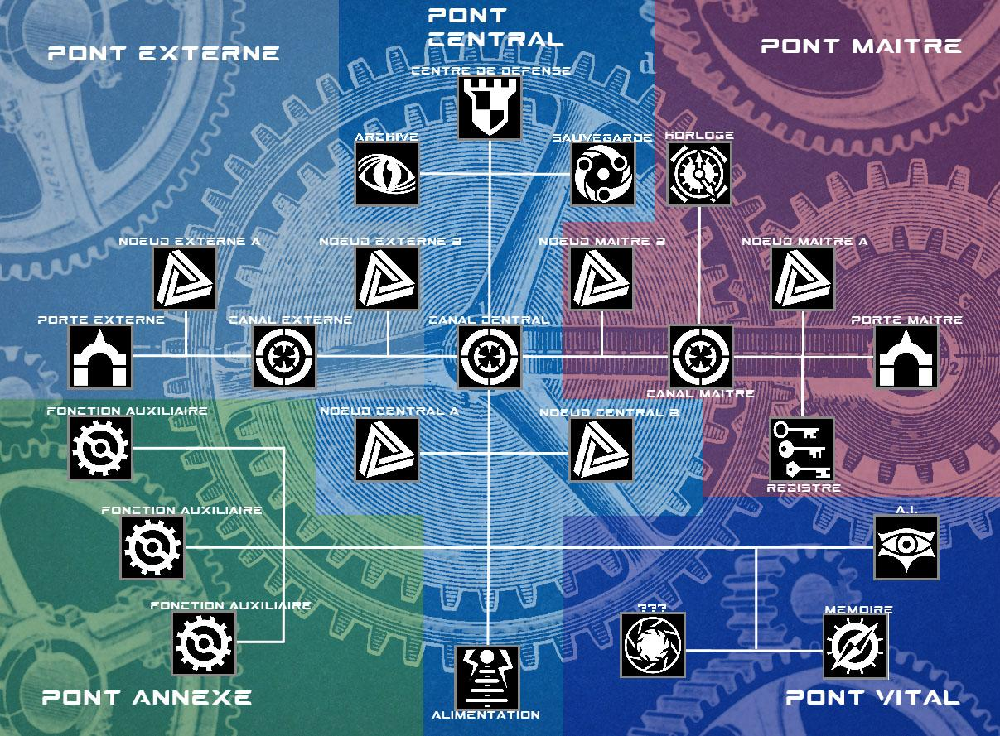

Terre Natale
Jeu de Rôle
Extension : La Technologie (du Steam)
Version 0.1.01
Lutie
2017 - 2021
Table des matières
Extension de l’Univers 0
Généralités 0
Attribut de l’Extension 0
La Logique 0
Compétences de l’Extension 0
Les Compétences Technologiques 0
Traits de l’Extension 1
Caractéristiques de l’Extension 1
Actions de l’Extension 1
Détails de l’Extension 3
Généralités 3
Comprendre la Technologie 3
L’Industrie 3
L’Aether 3
Le Steam 3
Le Flux 3
La Pratique de l’Industrie 4
Elaborer une Technologie 4
Produire une Technologie 4
Réparation d’une Technologie 4
Améliorer une Technologie 4
Les Sciences Biologiques 5
Pharmacie 5
Toxicologie 5
Les Sciences Organiques 6
Pyrotechnie 6
Chimie 6
Les Sciences Technologiques 7
Armurerie (Arme) 7
Armurerie (Armure) 7
Les Sciences Mécaniques 8
Machinerie Terrestre 8
Machinerie Aérienne 8
Machinerie Aquatique 8
Les Sciences Mécatroniques 9
Biomécatronie 9
Macromécatronie 9
Micromécatronie 9
La Pratique du Steam 10
Quelques mots clés 10
Ce qu’est vraiment le Steam 10
A quoi ressemble vraiment un circuit Steam ? 10
Comment se représenter un circuit Steam ? 10
Présentation du circuit Steam 0
Notions propres au circuit 4
Présentation d’un Opérateur 4
Evoluer & Agir dans le circuit Steam 5
L’usage du Steam lors des confrontations 5
L’usage du circuit pour le Maitre 5
L’usage du circuit pour les Invités 5
L’usage du circuit pour les Intrus 6
Les Actions hors du Steam 7
Les Actions dans le Steam 7
Les Trinkets 9
Les Armes à Feu 10
Présentation 10
Généralités 10
Le Bloc de base 10
Les Blocs principaux 10
Les Blocs secondaires 10
Les Fabricants 11
Système de fabricant et compatibilités 11
Les fabricants et les blocs 11
Liste des Fabricants 11
Répartition selon les blocs 12
Les différents Blocs de base 12
Exemples d’Armes 12
Travailler les Blocs 12
Créer un bloc 12
Générer un bloc 12
Modifier un bloc 12
Les effets des blocs 13
Extension de l’Univers
Généralités
L’extension de la technologie est prévue pour le système de jeu Terre Natale.
Il y ajoute les mécanismes et fonctionnements de l’ensemble des fonctionnalités associées aux sciences et aux nouvelles technologies (existantes dans notre monde actuel ou non).
La technologie présentée dans cette extension a été réalisée pour être jouable dans l’univers de Thalifen. Aussi cherche-t-elle à se rapprocher de l’esprit steampunk et non cyberpunk.
De fait si des technologies surprenantes telles que les véhicules ou les robots sont présents, il s’agit de représentation bien spécifique très éloignées de films de SF.
Ce sont des appareils mêlant la science et la magie, une forme de technologies que nous ne connaitrons jamais mais qui permet des fantaisies atypiques.
Pour en savoir plus sur les règles fixants les limites de la technologie présentée ici et les lois qui la régisse
Attribut de l’Extension
Cette extension ajoute un nouvel attribut à la liste des attributs principaux.
La Logique
La logique représente la faculté du personnage à raisonner autour des sciences et de leur usage pratique.
Cet attribut permet d’effectuer tous les tests d’élaboration, création, réparation, etc… qui doivent s’appliquer à un outil, un objet ou quoi que ce soit qui soit rattaché aux nouvelles technologies.
La logique permet également de faire usage du steam, une science atypique mais puissante.
Comme pour les attributs principaux la Logique a une valeur de départ de 7.
Compétences de l’Extension
Cette extension ajoute un certain nombre de catégorie, groupe et compétence à la liste des compétences.
Les Compétences Technologiques
Les compétences dites technologiques sont celles qui permettent de faire usage des sciences et des nouvelles technologies. Sur ce dernier point il ne faut pas les confondre avec les compétences de métiers qui s’appliquent essentiellement à des technologies antiques (que sont les différents artisanats).
Les groupes de compétences, qui représentent les grandes traditions magiques, ne peuvent être appris sans qu’un avantage adéquat ne le permette.
Chaque groupe est constitué d’une liste spécifique de compétence qui représente les « domaines technologiques » auquel ces dernières ont accès.
Sciences Biologiques
Compétences (Domaines) : Pharmacie, Toxicologie, Chimie.
Description : Les sciences biologiques se concentrent sur les corps vivants.
Pharmacie : Couvre la création des produits thérapeutiques pouvant ralentir, guérir ou prémunir des afflictions subits par le corps ou l’esprit.
Toxicologie : Couvre la création des drogues, qui peuvent avoir des effets positifs ou négatifs sur le corps ou l’esprit.
Sciences Organiques
Compétences (Domaines) : Pyrotechnie, Chimie.
Description : Les sciences organiques se concentrent sur les réactions ayant lieu entre des corps inertes.
Pyrotechnie : Couvre la création d’explosifs et autres produits volatiles en tout genre.
Chimie : Couvre la création des acides et gaz, qui peuvent avoir des effets corrosifs pour les uns et très variés pour les autres.
Sciences Technologiques
Compétences (Domaines) : Armurerie (Offensive), Armurerie (Défensive).
Description : Les sciences technologiques est un nom qui ne retranscrit que très peu la dangerosité de ses domaines. C’est en effet celui de l’armement.
Armurerie (Offensive) : Couvre la création d’armes à feu ou blanche. Ces dernières sont plus évoluées que l’arme blanche antiques car bien souvent multifonctionnelle.
Armurerie (Défensive) : Couvre la création d’armures.
Armurerie (Pratique) : Couvre la création d’outils pratique (qu’on nomme parfois aussi gadget).
Sciences Mécaniques
Compétences (Domaines) : Machinerie (terrestre), Machinerie (aquatique), Machinerie (aérienne).
Description : Les sciences mécaniques s’évertues à mettre en place différents véhicules. Chaque domaine s’occupe d’un type de véhicule en fonction d’où et comment il doit évoluer.
Machinerie (terrestre) : Couvre la création des véhicules terrestres tels que les chars et les trains.
Machinerie (aquatique) : Couvre la création des véhicules aquatiques tels que les navires et les sous-marins.
Machinerie (aérienne) : Couvre la création des véhicules aériens tels que les aéronefs.
Sciences Mécatroniques
Compétences (Domaines) : Biomécatronie, Macromécatronie, Micromécatronie.
Description : Les sciences mécatroniques se concentrent toutes sur une mécanique à échelle humaine.
Biomécatronie : Couvre la création d’automails et autres prothèses mécaniques visant à remplacer un membre (jambes ou bras, le reste n’est pas possible puisqu’il y a des centres vitaux) chez un être vivant.
Macromécatronie : Couvre la création d’automates de grande taille. On parle aussi de travailleurs mécaniques (ou robots). Nécessite l’usage de l’ingénierie car sans le steam les automates ne peuvent être autonomes.
Micromécatronie : Couvre la création d’automates de petite taille. On parle aussi de drône. Nécessite l’usage de l’ingénierie car sans le steam les automates ne peuvent être autonomes.
Sciences Génériques
Compétences : Ingénierie Steam, Métallurgie.
Description : Les sciences génériques regroupent des sciences qui peuvent s’imbriquer dans d’autres pour dévoiler de nouvelles facettes ou possibilités.
L’ingénierie Steam permet aux autres sciences de renforcer leurs créations à l’aide du steam. Certains domaines ne peuvent PAS fonctionner sans (macro et micromécatronie), le reste oui.
La métallurgie permet de fusionner des métaux et créer ainsi celui que l’on souhaite.
Steam
Compétences : Percevoir (LOG), Voir (INT), Aider (SAG), Agir (VOL), Fuir (RUS), ??? (CHA).
Description : Le steam est accessible à ceux qui en ont la connaissance et la maitrise. Accéder au steam c’est être capable de manipuler l’aether afin de le configurer, etc…
C’est aussi important pour l’utilisateur que pour ceux qui veulent nuire à l’usage des constructions qui tournent à l’aide de cette technologie.
Percevoir le steam est une première étape obligatoire afin de pouvoir être en mesure de voir le circuit steam d’une machine.
Voir le steam permet d’obtenir des informations sur les différents nœuds d’un circuit steam.
Aider le steam permet de réparer ou renforcer un nœud steam.
Agir sur le steam permet d’attaquer ou affaibilir un nœud steam.
Fuir le steam permet à l’utilisateur d’éviter les attaques directes ou à sortir du circuit.
Traits de l’Extension
Cette extension ajoute un certain nombre d’avantages et désavantages.
Retrouvez ces derniers dans le Compendium des Traits dans le chapitre concernant l’extension du steam.
Caractéristiques de l’Extension
Cette extension ajoute un certain nombre de caractéristiques.
Le Steam
Le steam est une ressource fondamentale.
Le Steam représente la capacité du personnage à agir dans le steam.
Si le Steam chute à 0 rien de néfaste n’a lieu mais agir dans le steam est alors impossible.
Le Steam dépend de la Logique. Elle est nulle si le personnage n’a pas la capacité d’agir sur le steam (matérialisé par le groupe de compétence du même nom).
La Créativité
La créativité est une ressource unique.
La Créativité représente la capacité du personnage à produire un travail hors norme, qui ne peut être réalisé par n’importe qui, n’importe quand ou autant de fois qu’on le souhaite.
La Créativité permet ainsi de donner des propriétés uniques à des objets que l’on créé.
Si la Créativité chute à 0 rien de néfaste n’a lieu mais il n’est alors plus possible de produire de telles créations.
Si le personnage n’a pas de domaine technologique alors sa créativité est de 0 puisqu’il ne peut en faire usage.
La Créativité dépend de la Logique.
La Récupération du Steam
Elle fixe la récupération du Steam.
La Récupération du Steam dépend de la Logique et de l’Equilibre.
- Récupération du Steam = modificateur de Logique + modificateur d’Equilibre.
Actions de l’Extension
Cette extension ajoute un certain nombre d’actions.
Retrouvez ces dernières dans le Compendium des Actions dans le chapitre concernant l’extension du steam.
Détails de l’Extension
Généralités
L’extension de la technologie est prévue pour le système de jeu Terre Natale.
Voici les notions et systèmes ajoutés dans le cadre de son usage.
Comprendre la Technologie
?
L’Industrie
C’est toute la phase création/amélioration…
L’Aether
L’aether…
Le Steam
Le steam…
Le Flux
Le flux…
La Pratique de l’Industrie
Pour pouvoir confectionner une pièce de technologie un personnage doit satisfaire deux conditions : Pratiquer la science qui est associé à cette technologie ET connaitre le patron de ce qu’il souhaite créer.
La pratique d’une science est matérialisée par le fait d’avoir l’avantage débloquant ladite science, le groupe du même nom au niveau 1 minimum et la compétence concerné par la technologie à créer au niveau 1 minimum.
Connaitre le patron d’une technologie nécessite de l’avoir « acquis », au même titre que l’on acquit les manœuvres, des sorts et autres formes de savoirs.
L’acquisition est donc, à ce titre, limité par la mémoire comme pour les autres savoirs.
Ces acquis sont appelés des « patrons », comme pour l’artisanat.
Elaborer une Technologie
Le
Produire une Technologie
Le
Choix du Patron
Tout d’abord le personnage doit procéder au choix de son patron. Le patron définit ce que contiendra la technologie à créer.
Cela implique donc que le choix du patron ne peut être modifié en cours de route.
Le patron est associé à une difficulté de création.
Choix du Niveau de Production
Ensuite le personnage doit déterminer le Niveau de Production.
Ce choix est important car il détermine le niveau de création auquel la technologie peut prétendre au moment de la finalisation.
Le Niveau de la Production ne peut dépasser le total de Niveau de Groupe + Niveau de Compétence associé à la technologie.
La difficulté associée au test de production est basé sur la difficulté de la production.
- Difficulté de Production = Difficulté de la Création + Niveau de Création x2.
Test de Production
Le personnage doit ensuite se soumettre à un test de production. Ce test repose sur le groupe et la compétence associés au sort en question. Dans tous les cas l’attribut sollicité pour le test sera la Logique.
Le score ET le résultat du test définissent quel sera la limite du niveau de la technologie en préparation.
Trois cas de figure se présentent alors.
- Si le résultat du test est égal ou supérieur à la difficulté de production, la technologie est une réussite.
- Si le résultat du test est inférieur à la difficulté de production mais supérieur à la difficulté de création alors la technologie est créé au niveau permis par le score du test mais reçoit une « malfonction ».
- Si le résultat du test est inférieur à la difficulté de production ET à la difficulté de création alors la production est un échec.
Réparation d’une Technologie
Le
Améliorer une Technologie
Le
Les Sciences Biologiques
?
Pharmacie
?
Toxicologie
?
Les Sciences Organiques
?
Pyrotechnie
?
Chimie
?
Les Sciences Technologiques
?
Armurerie (Arme)
?
Armurerie (Armure)
?
Ingénierie (Gadget)
?
Les Sciences Mécaniques
?
Machinerie Terrestre
?
Machinerie Aérienne
?
Machinerie Aquatique
?
Les Sciences Mécatroniques
?
Biomécatronie
Prothèse
Macromécatronie
Méca-armure, Automates (taille M)
Micromécatronie
Tourelles, Drônes (taille P)
Les Sciences Générales
?
Ingénierie
?
Métallurgie
?
La Pratique du Steam
Le steam est une fonctionnalité importante de la technologie. Elle permet en effet d’apporter l’énergie nécessaire à la mise en fonction de machines et appareils aussi hétéroclites que clinquantes, mais elle permet en plus de leur donner « vie » en permettant une configuration des automatismes lorsque c’est nécessaire.
Quelques mots clés
Les usagers du système steam sont appelés les steameurs ou architectes. Dans un système on distingue le maitre, l’invité et l’intrus.
L’impulsion (steam) est le signal envoyé dans le circuit par les usagers afin d’interagir avec.
Ce qu’est vraiment le Steam
Ce que l’on nomme est le steam est une pratique.
Le steam coordonne la mise en place d’une forme d’alimention permettant de faire fonctionner de simples appareils ou des automates plus complexes.
Le steam permet aussi de configurer ces derniers en leur donnant des ordres ou même une intelligence artificielle.
Enfin le steam permet également d’améliorer des systèmes existants en leur fournissant des fonctionnalités en plus.
Le steam est mise en œuvre dans ce qu’on l’appelle pompeusement un circuit aethérique. Aethérique car l’énergie manipulée par le steam est l’aether.
Les circuits aethériques sont plus couramment appelés circuits steam. C’est plus simple et plus éloquents pour les non-initiés !
Afin de voir et agir sur ces circuits il y a les opérateurs. Ce sont ces appareils qui permettent cette interaction.
L’usage et la pratique du steam passe donc par deux éléments clés majeurs : Les circuits et les opérateurs !
Le Circuit Steam
C’est dans un circuit aéthérique, dit steam, que l’ensemble des fonctionnalités d’un appareil sont regroupés.
Selon la nature de l’appareil en question les fonctionnalités incluses peuvent variées. Par exemple un automate a besoin d’ordres et de procédures alors qu’une amélioration d’arme à feu non.
Le circuit steam est lui-même automatisé et peut se défendre seul des impulsions qui ne sont jugées malignes (ou intruses), se réparer tout seul, etc…
Les Opérateurs
Les opérateurs sont des appareils utilisés par les steameurs pour accéder à un circuit steam afin de le visualiser, le modifier, etc…
Les opérateurs prennent très souvent la forme de grosses lunettes bardées de mécanique et de verres aux teintes étranges. En réalité le steamer peut apercevoir une représentation épurée et imagée du circuit au travers des lentilles de ces « lunettes ».
L’opérateur permet donc de voir le circuit et ses éléments, qu’il soit le siens ou celui des autres. L’opérateur permet même, en fait, de « percevoir » tous les circuits proches, sans distinction.
Il permet également de générer l’impulsion qui va, à distance, permettre d’interagir avec le circuit.
A quoi ressemble vraiment un circuit Steam ?
Le circuit steam lui-même est logé dans un noyau central. C’est là que la technologie effectue le gros des décisions, la répartition des énergies, etc… Puis évident de là sont acheminées par des éléments variés et disparates de tubes et autres conducteurs les différentes impulsions et autres signaux nécessaires aux fonctionnements des appareils.
Dans les prochaines lignes nous étendrons surtout sur l’élément central, le circuit, logé dans le dit noyau. C’est lui qui peut être configuré, manipulé, etc… Le reste correspond plus à de la construction voir de l’artisanat à proprement parler !
Comment se représenter un circuit Steam ?
De façon schématique le steam peut être représenté par la figure suivante :

Figure 1 Circuit type d'un "Automate"
Présentation du circuit Steam
Nous allons détailler chacun des éléments présents sur ce shéma, le fonctionnement du circuit steam apparaitra alors presque tout seul !
Les éléments
Les éléments sont les points importants d’un circuit. Il en existe de plusieurs sortes en fonction du ou des usages qui en sont faits.
Tous les éléments présentés ci-dessous sont des éléments du circuit.
Les actions et les « éléments »
Action(s) possibles(s) : Voir, Supprimer, Restaurer, Affaiblir, Renforcer.
« Voir » un élément permet d’obtenir les informations de bases sur celui-ci, pas son contenu à proprement parler mais son état etc… Est-ce une porte fermée, ouverte, etc…
« Restaurer » un élément permet de le réactivé si il a été supprimé. La sauvegarde effectue cette action automatiquement lorsqu’un élément est supprimé.
« Supprimer » un élément permet de le désactiver.
« Renforcer » un élément permet de le prémunir d’une suppression en lui octroyant un bonus. Non cumulable.
« Affaiblir » un élément permet de le rendre plus sensible à une suppression en lui octroyant un malus. Non cumulable.
Les Ponts (bridges)
Les ponts sont des zones du circuit qui délimitent les différentes parties composants ce dernier.
Chaque zone doit se plier à des règles différentes car elles supportent des éléments spécifiques et elles ne peuvent avoir les mêmes règles de sécurités, etc…
Le Pont Maitre est le pont par lequel accède le maitre de l’appareil.
Le Pont Vital est le pont où se trouvent les fonctionnalités relatives à la logistique des appareils.
Le Pont Annexe est le pont où se trouvent les fonctionnalités les moins sensibles de l’appareil. Ces fonctionnalités peuvent être cruciales pour l’usage qui sera fait de l’appareil mais pas pour sa sécurité.
Le Pont Externe est le pont par lequel accède une impulsion autre que l’impulsion maitre, généralement sans y être la bienvenue (intrus) et parfois oui (invité). Cela étant, il peut parfois être nécessaire à un maitre d’entrer dans son circuit steam par cette zone, si la zone maitre est inaccessible (ce qui est généralement le cas lors d’une première programmation, le registre n’étant PAS installé).
Techniquement parlant le pont externe n’existe pas vraiment dans un circuit, c’est une zone qui est établie et greffé au reste pas les usagers désireux d’entrée sans correspondre à la clé maitre. C’est la raison pour laquelle cette zone dispose de la sécurité la plus faible.
Les actions et les « ponts »
Action(s) possible(s) : Percevoir.
« Percevoir » les ponts permet simplement de voir le circuit à proprement parler. C’est la première de toutes les actions nécessaires une fois entré dans un circuit afin d’interagir avec !
Les Portes (Doors)
Les portes sont les points d’entrée du circuit. Il en existe deux.
La Porte Maitre est l’entrée principale accessible à ceux dont le code source est référencé dans le registre comme « maitre ». Un tel hôte dispose de droits privilégiés sur le circuit, comme on pourrait s’en douter.
Il est impossible de passer cette porte sans que le registre ne soit correctement renseigné au préalable.
La Porte Externe est une entrée dérobée accessible à tout le monde, ou du moins à tous ceux qui ont les moyens d’intervenir sur le steam. Ce n’est pas tant qu’une entrée existe et invite à l’intrusion mais qu’il est simplement impossible de prémunir un système steam des dites intrusions. On parle alors d’invités ou intrus.
La porte externe n’est pas un élément physique qui peut être retiré ou supprimé, la nature volatile du steam fait qu’il y a forcément un point d’entrée accessible à toutes les impulsions steam. En quelque sort les invités ou intrus mettent eux même en place cette porte. Et c’est à cela que servent ensuite les gates, comme on le verra : à bloquer les intrus et leurs impulsions non désirées.
Les « invités » d’un système doivent être référencés dans le registre au préalable.
Les actions et les « portes »
Action(s) possible(s) : Entrer, Sortir.
« Entrer » se fait depuis l’extérieur d’un circuit et permet d’y entrer. L’impulsion apparait alors au niveau d’une des deux portes.
« Sortir » se fait depuis l’intérieur du circuit, au niveau d’une porte, et permet d’en sortir.
Les Canaux (Gates)
Les canaux sont des points de passages du circuit. Il en existe trois.
Un canal peut être ouvert, fermé ou forcé.
Un canal ouvert laisse passer n’importe qui/quoi.
Un canal fermé ne laisse passer que le maitre.
Un canal forcé ne laisse passer que celui qui l’a forcé.
Le Canal Maitre est le canal privilégié du maitre du circuit. C’est un canal virtuellement impossible à pénétrer pour un steamer si son impulsion n’a pas un code source identique à celui du maitre.
Ce canal laisse passer le maitre, qu’il soit ouvert ou non.
Le Canal Central est le canal au centre du circuit et qui permet l’accès aux fonctionnalités de l’appareil. Ce canal est plus difficile à passer que le canal externe ce qui en fait une protection supplémentaire efficace.
Ce canal laisse passer le maitre, qu’il soit ouvert ou non.
Le Canal Externe est le canal servant de pare feu aux intrus du système. En effet l’accès leur est fermé de base et ils doivent le forcer pour pouvoir progresser dans le circuit. Ce canal est cependant le moins renforcé des 3 et la protection qu’il assure n’est que virtuelle.
Contrairement aux autres ce canal ne laisse passer personne s’il est fermé, maitre ou non. C’est dû au fait que cette gate est généralement un défaut obligatoire du système et non une partie qui a pu être érigé minutieusement et sans défauts.
Un steamer peut faire usage de son impulsion steam afin d’ouvrir ou fermer un canal via des actions simples. Le maitre n’a pas besoin de réaliser des tests pour ça alors qu’un intrus oui.
Les maitres peuvent passer la plupart des canaux (même fermés) aussi ne sont-ils pas ralentis lorsqu’ils évoluent dans leur propre circuit.
Les actions et les « canaux »
Action(s) possible(s) : Configurer, Forcer.
« Configurer » un canal permet, à ceux qui ont des droits d’écriture, de modifier l’état de celui-ci de ouvert/fermé/forcé à ouvert ou fermé.
« Forcer » un canal permet, à ceux qui n’ont pas des droits d’écriture, de modifier l’état de celui-ci en forcé. Un canal forcé laisse passer une impulsion dont le code source est celui qui l’a forcé.
Les Noeuds (Nodes)
Les nœuds sont des points neutres du circuit dans lesquels peuvent être mis en place des trinkets. Il y a 6 nœuds dans un circuit.
Les Nœuds Maitres (A et B) sont placés sur le pont maitre.
Le maitre du circuit s’assure généralement que des trinkets soient déjà mis en place afin de renforcer les fonctionnalités de son circuit.
Les Nœuds Centraux (A et B) peuvent également être mis en place par le propriétaire. Cependant ce n’est pas une obligation car ces derniers ne doivent pas dépasser la capacité de l’horloge.
De plus un intrus peut avoir accès à ces nœuds et ils sont donc moins protégés que ceux du pont maitre.
Les Nœuds Externes (A et B) sont des nœuds qui peuvent être mis en place par des steamers via le pont externe. On peut voir sur le schéma que le premier nœud est accessible dès l’entrée dans le circuit alors que le second nécessite au préalable de passer le canal externe.
Les actions et les « noeuds »
Action(s) possible(s) : Configurer, Créer.
« Créer » un nœud permet d’y installer un trinket.
« Configurer » un nœud permet de modifier les propriétés du trinket (tel que son niveau par exemple).
Le Centre de Défense (DC)
Le centre de défense est le système de protection du circuit. Automatisé, il est en recherche permanente d’impulsions ne correspondant pas au code source maitre ou à celui des invités et les chassent.
Le centre est inactif lorsqu’il est en mode recherche. Il devient actif lorsqu’il perçoit un signal intrus et se met en chasse.
Le centre, lorsqu’il est actif, génère se propre impulsion dans le circuit et il est soumis aux mêmes règles qu’un usager « invité ». Lors de son activation l’impulsion débute là où se situe le centre de défense, sur le pont central. Puis il progresse dans le circuit en passant les gates normalement. Si celles-ci sont forcées il doit alors les passer lui aussi de force. Le centre a des caractéristiques qui dépendent entièrement du circuit.
Le centre ne peut être configuré par une impulsion ne portant pas le code source désigné comme étant le maitre.
Lorsqu’aucune impulsion n’est dans le circuit, le centre referme tous les canaux et vide tous les nœuds des trinkets dont le code source ne correspond pas au maitre du système circuit.
Les actions et l’« alimentation »
Action(s) possible(s) : Configurer, Réhabiliter.
« Configurer » le centre de défense permet d’en modifier les priorités.
« Réhabiliter » le centre de défense permet de restituer son capital steam lorsque ces derniers ne plus au maximum. La sauvegarde effectue cette action automatiquement lorsque le capital atteint 0.
L’Alimentation (Power)
L’alimentation est la fonctionnalité qui permet au circuit d’alimenté correctement l’appareil en énergie.
On peut ainsi configurer l’état de cette fonction afin d’allumer, éteindre ou mettre en veille l’appareil.
La mise en veille correspond à un état d’attente qui ne consomme (généralement) pas de charges.
Les actions et l’« alimentation »
Action(s) possible(s) : Configurer.
« Configurer » l’alimentation permet de changer l’état de celui-ci.
Les fonctions Auxiliaires
Les fonctions auxiliaires octroient à l’appareil des propriétés supplémentaires.
Ces propriétés peuvent être variées : Armes, Boucliers, etc… Tout dépend du type d’appareil dont on parle et de l’usage qui en est fait !
Bien souvent les améliorations « steam » pouvant être confectionnée et rattachée à un équipement ou un appareil nécessite un circuit steam et se retrouve localisé dans une des fonctions annexes.
Les actions et la « fonction auxiliaire »
Action(s) possible(s) : Configurer.
« Configurer » une fonction auxiliaire permet de changer une des options de celui-ci (lorsque ce dernier en a plusieurs).
L’Intelligence Artificielle (A.I.)
L’intelligence artificielle est une fonctionnalité qui permet de définir les ordres et, de manière plus générale, qui permet de définir l’automatisation de l’appareil.
Une tourelle qui ne tire que sur des cibles non autorisées a forcément reçus ce genre d’indications dans cette fonctionnalité.
L’intelligence artificielle peut être modifiée à la volée selon l’usage qui doit être fait d’un appareil. Par le maitre ou non.
Les systèmes autonomes qui doivent identifier des personnes alliés (tel que des tourelles ou des travailleurs mécaniques) ont besoins d’un code biothermique pour ça. Et c’est dans cet élément, l’intelligence artificielle, que ces dernières sont répertoriées.
Les actions et l’ « I.A. »
Action(s) possible(s) : Consulter, Configurer.
« Consulter » permet de prendre connaissance de l’ensemble des paramètres existants pour l’I.A.
« Configurer » permet de modifier une partie de l’I.A., c’est-à-dire UN élément. Changer un ordre par un autre, etc… globalement on peut résumer cette modification par une phrase.
La Mémoire (Memory)
La mémoire est rattachée à l’usage de l’intelligence dans la mesure où elle permet de sauvegarder et restituer ensuite les décisions qui ont dû être prises par l’appareil.
De base la mémoire n’enregistre que les événements ayant un lien direct avec l’activation de l’appareil et ses prises de décisions liés à ses fonctionnalités.
Les actions et la « mémoire »
Action(s) possible(s) : Consulter, Configurer, Modifier.
« Consulter » permet de prendre connaissance des informations stockées dans la mémoire. Du moins une partie : Si on apprend toute la structure de la mémoire et de son potentiel contenu on ne peut en revanche obtenir qu’une seule « réponse » par action.
« Configurer » permet de modifier les événements à enregistrées. Il s’agira ainsi de modifier un élément spécifique (un événement externe au circuit).
« Modifier » la mémoire permet d’y ajouter des informations trompeuses ou d’en retirer. Encore une fois, limité à la modification d’un événement à la fois.
Les Archives
Les archives constituent l’historique du système et garde en mémoire la trace de chaque impulsion (code source, etc) et de chaque événement intervenu dans le circuit.
Il est possible de consulter cet historique à tout moment… ou bien d’en modifier son contenu.
Les actions et les « archive »
Action(s) possible(s) : Consulter, Configurer, Modifier.
« Consulter » permet de prendre connaissance des informations stockées dans les archives. Du moins une partie : Si on apprend toute la structure des archives et de son potentiel contenu on ne peut en revanche obtenir qu’une seule « réponse » par action.
« Configurer » permet de modifier les entrées à enregistrées. Il s’agira ainsi de pouvoir filtrer les éléments pouvant susciter une inscription dans les archives (un événement interne au circuit).
« Modifier » la mémoire permet d’y ajouter des informations trompeuses ou d’en retirer. Limité à la modification d’un événement à la fois.
Le Registre
Le registre garde en mémoire le code source désigné comme « maitre » du circuit.
Le registre garde également en mémoire le ou les codes sources désignés comme « invité » du circuit. Ces invités peuvent être acceptés avec un certain niveau d’accès. Un « invité » classique peut réaliser des lectures mais pas des écritures. Les « super invités » peuvent réaliser les deux mais ne peuvent pour autant toucher au registre.
Les actions et le « registre »
Action(s) possible(s) : Consulter, Configurer, Modifier.
La Sauvegarde
La sauvegarde garde en mémoire la configuration initiale du circuit et tente de rétablir celle-ci si quelque chose ne correspond plus.
La sauvegarde n’a pas besoin que le centre de défense soit actif pour se mettre à œuvrer. De plus elle œuvre partout dans le circuit sans avoir à déplacer une impulsion.
La sauvegarde peut être désactivée et dans ce cas bien entendu elle n’agit plus.
La sauvegarde se met en marche dès qu’un élément a besoin de son assistance. Cela étant, la sauvegarde ne réalise qu’une action par tour et met donc un certain temps à fixer les problèmes. La sauvegarde procède dans l’ordre des éléments modifiés.
Les actions et la « sauvegarde »
Action(s) possible(s) : Consulter, Configurer.
« Consulter » permet de connaitre les paramètres actuels de fonction de la sauvegarde.
« Configurer » permet de modifier les paramètres actuels de fonction de la sauvegarde, ajoutant des conditions ou des instructions spécifiques remplissant certains besoins ou une stratégie de défense spécifique (modifier l’ordre des restaurations systèmes, etc).
L’Horloge
L’Horloge permet de synchroniser et alimenter tous les trinkets appartenant au système (ces derniers étant ceux mis en place par le maitre ou un invité).
Si l’Horloge est désactivée ou réduite alors tous les trinkets sont coupés le temps que cet état de fait change.
Une horloge en underclock voit tous les trinkets du système réduit de 1 niveau.
Une horloge en overlock voit tous les trinkets du système augmenté de 1 niveau pour 2 tours.
Les actions et la « sauvegarde »
Action(s) possible(s) : Consulter, Configurer.
« Consulter » permet de connaitre l’ensemble des trinkets installés dans le système, même ceux qui se reposent sur une autre horloge que celle du système.
« Configurer » permet de modifier les paramètres d’un ou de plusieurs trinkets rattachés à l’horloge.
Il est sinon possible de placer l’horloge en état d’underclock ou d’overclock.
Notions propres au circuit
Nous allons détailler les notions gravitant autour du circuit steam afin de comprendre leur intérêt, usage et fonctionnement.
L’impulsion
L’impulsion aéthérique est un signal émis par un utilisateur. Elle porte en elle le code source de ce dernier, sorte de signature, ce qui l’identifie aux yeux du système. Elle évolue dans celui-ci de manière atypique : En effet l’impulsion doit se déplacer dans le circuit afin d’atteindre les fonctionnalités visées par le steameur.
Les Trinkets
Les trinkets sont des supports rattachés à des nœuds du circuit. Ils peuvent affecter le circuit de différentes façons et bien des manières.
On distingue les trinkets passifs qui modifient un paramètre du système en permanence des trinkets actifs qui doivent être activé pour réaliser une modification immédiate (temporaire ou éphémère).
Un trinket, pour être effectif, doit être soutenu par l’horloge du système OU par l’opérateur du steamer.
Généralement le maitre et ses invités peuvent avoir recours à l’horloge du système pour soutenir leurs trinkets alors que les intrus doivent se reposer sur leur opérateur.
Chaque trinket consomme 1 à 3 charges et le total ne doit pas dépasser la capacité d’horloge sans quoi les fonctionnalités les plus « couteuses » sont réduites ou désactivées.
Lecture et Ecriture
Il est utile de définir ce qui constitue une lecture et une écriture.
La lecture dans le système correspond à toutes les actions suivantes : Voir, Consulter, Renforcer, Restaurer.
Ce sont donc des actions qui ne peuvent nuire au système.
L’écriture dans le système correspond à toutes les actions suivantes : Configurer, Supprimer, Affaiblir.
Ce sont donc des actions qui peuvent nuire au système. Seule la première, qui consiste seulement à reconfigurer un élément, est employée par un maitre. Les autres sont de toute évidence l’apanage des utilisateurs aux intensions malhonnêtes… Qui pourraient aussi reconfigurer un système si l’envie-lui en dit, évidemment.
Présentation d’un Opérateur
L’opérateur est un système basé sur la technologie du steam mais qui ne peut être exploré comme peuvent l’être les circuits : Il s’agit uniquement d’un outil d’accès et de configuration.
Au-delà de cette simple définition se cache cependant des appareils complexes composés lui aussi d’éléments.
* En développement *
La Lentille
L’opérateur dispose d’une lentille qui fait office d’éditeur. C’est l’élément qui lui permet de générer l’impulsion dans un circuit donné et qui lui permet d’agir sur celui-ci en effectuant des opérations.
Le Filtre
L’opérateur dispose d’un filtre qui fait office de tampon entre l’énergie manipulée et lui. C’est l’élément qui lui permet de réduire l’impact des brûlures steams.
L’Horloge
L’opérateur dispose lui aussi d’une horloge. Cette dernière permet de maintenir des trinkets dans les circuits sur lequel l’utilisateur est en cours d’opération.
* En développement *
Evoluer & Agir dans le circuit Steam
La présence d’un steameur dans un circuit est matérialisée par son impulsion. L’impulsion peut naviguer dans le circuit afin d’atteindre les éléments que recherche le steameur. Voici les règles encadrants la navigation des impulsions :
- Les impulsions entrent dans le système par l’une des deux portes.
Rappel : La porte du maitre ne laisse passer que les impulsions dont le code source est renseigné dans le registre comme étant le maitre. - Lors d’un déplacement l’impulsion peut naviguer jusqu’à n’importe quel élément du moment que le chemin y menant n’est pas bloqué par une porte « fermée » ou « forcée » par un code source différent du siens.
- Une impulsion non reconnue par le circuit (intrus) voit son chemin bloqué par les impulsions reconnus par le circuit (maitre, invité ou système de défense).
Une fois que l’impulsion se situe à hauteur d’un élément, l’utilisateur peut agir sur celui-ci. En fonction de l’élément en question il est possible de le forcer, le détruire, le reconfigurer, le renforcer... etc. Toutes ces possibilités sont détaillées dans la liste des actions ajoutées par l’extension.
L’usage du Steam lors des confrontations
L’usage du steam est, au même titre que le reste, sujet aux règles de confrontations. Les actions requises pour interagir avec le steam sont les mêmes que celle qui permettent d’agir durant une confrontation, aussi un steameur en plein feu de l’action devra choisir entre réaliser des actions dans le monde matériel ou dans le steam d’une machine !
On distingue 2 catégories de steameurs :
- Ceux qui interviennent sur leurs propres machines afin de rectifier des configurations en cours d’utilisation ou défendre leur système des intrusions. Par convention on nomme généralement ces derniers les « concepteurs ».
- Ceux qui forcent les machines des autres pour désactiver, reconfigurer ou détruire un système gênant. On nomme généralement ces derniers les « architectes ». Par convention on nomme généralement ces derniers les « sapeurs ».
Mais nul ne doute que le rôle des uns puisse se mêler à celui des autres lorsque la situation l’exige. Rien de plus efficace que de désactiver l’alimentation d’un automate lorsque ce dernier menace sa propre vie, que l’on respecte les conventions du steam ou non.
L’usage du circuit pour le Maitre
Le maitre d’un circuit fait généralement usage du circuit pour y mener des configurations et vérifications de l’appareil.
Le maitre entre ainsi par la porte maitre et peut évoluer sans difficulté dans son système. Il n’a pas à réaliser de tests lorsqu’il souhaite passer une porte (sauf si celle-ci est forcée).
Le maitre réalise des tests sur son système lorsqu’il souhaite :
- Configurer un élément.
- Réhabiliter un élément (centre).
- Restaurer un élément.
- Renforcer un élément.
- Créer un trinket.
Les trinkets mis en place par le maitre ne sont jamais retirés par le centre de défense. Les trinkets ainsi disposés doivent être accepté par l’horloge du circuit, dont la capacité est limitée, ou par l’horloge de son opérateur, idem.
L’usage du circuit pour les Invités
Les invités d’un circuit doivent être inscrits dans le registre et même ainsi ils n’ont pas les pleins pouvoirs. Ils ont pour rôle par définition « d’assister » le maitre.
L’invité doit entrer par la porte externe et peut évoluer sans difficulté dans le système. Il n’a pas à réaliser de tests lorsqu’il souhaite passer une porte (sauf si celle-ci est forcée).
L’invité réalise des tests sur le système dans les mêmes cas que pour un maitre, sauf que le registre peut lui en interdire certains basés sur « l’écriture ».
Les trinkets mis en place par le maitre ne sont jamais retirés par le centre de défense. Les trinkets ainsi disposés doivent être accepté par l’horloge du circuit, dont la capacité est limitée, dont la capacité est limitée, ou par l’horloge de son opérateur, idem.
L’usage du circuit pour les Intrus
Les intrus d’un circuit sont donc les utilisateurs employant une impulsion qui ne porte pas un code source identifié comme maitre ou invité. Ils ne sont pas les bienvenus dans le système.
L’intrus doit entrer par la porte externe et ne peut pas évoluer dans le système sans « forcée » les canaux qui lui sont formés, ce qui nécessite des tests.
L’intrus réalise des tests sur le système lorsqu’il souhaite :
- Consulter un élément.
- Forcer un élément.
- Configurer un élément.
- Restaurer un élément.
- Supprimer un élément.
- Renforcer un élément.
- Affaiblir un élément.
- Créer un trinket.
Les trinkets mis en place par les intrus sont retirés par le centre de défense lorsqu’il n’y a plus d’impulsion dans le système. Les trinkets ainsi disposés doivent être accepté par l’horloge de l’opérateur de l’intrus, dont la capacité est limitée.
Le Centre de défense et les intrus
Si un intrus est dans le système et que le centre de défense est inactif alors chaque test réalisé permet au centre de réaliser un test de recherche contre le test de discrétion de l’intrus. En cas d’échec il n’a pas perçu les agissements de l’intrus et reste inactif. En cas de réussite il a perçu les agissements (et la position) de l’intrus et devient actif. Dans ce cas son initiative est initialisée.
Si l’intrus n’a pas pris le temps de réaliser un test de discrétion alors… il est aperçu au premier test de recherche du centre !
Si un intrus est dans le système et qu’un de ses tests est un échec il doit réaliser un test de « discrétion » afin de réactualiser son seuil de discrétion. Ces nouveaux tests ne peuvent jamais permettre d’augmenter ou d’égaler le seuil précédent ! Au mieux celui-ci sera réduit de 1.
Si un intrus est dans le système et que le centre de défense est actif alors ce dernier cherche à le rejoindre le plus vite possible. Le centre dispose pour cela d’actions comme n’importe qui d’autre. Il peut ainsi se déplacer en suivant les règles de déplacement des impulsions ou attaquer une de ces dernières s’il se situe au même niveau.
Le centre réalise ces actions en suivant l’ordre d’importance suivant :
- Attaquer l’intrus le plus proche (une fois par round seulement).
- Se Déplacer vers l’intrus le plus proche.
- Forcer un canal s’il bloque le chemin.
- Se Défendre d’une attaque (une fois par round seulement).
Attaquer dans le steam
Attaquer dans le steam permet de réduire une impulsion à néant. L’impulsion des intrus peuvent ainsi être attaquées par l’impulsion du centre, du maitre ou d’un invité. L’impulsion du centre, du maitre ou d’un invité peut être attaquée par celui d’un intrus.
Note : Dans les faits n’importe qui peut attaquer n’importe qui.
Lorsqu’une attaque est portée un test est réalisé. Si le test dépasse la défense passive de la cible alors celle-ci peut répliquer par une défense active si elle le souhaite. Si le principe semble être le même qu’en confrontation il y a quelques différences majeures : Les défenses actives permettent d’ignorer totalement une attaque et il n’y a pas de notions d’absorption ou résistance, etc… Les dégâts sont équivalant à la marge de réussite et voilà.
Ces dégâts sont infligés au steam de la cible. Si c’est un utilisateur alors cela l’affecte directement, l’énergie du steam le brûle légèrement et perturbe sa concentration. Un utilisateur qui n’a plus de steam ne peut plus maintenir d’impulsion dans un circuit ! Le siens ou celui d’un autre…
Défendre dans le steam
Défendre dans le steam permet de réduire à néant une attaque. N’importe qui peut défendre dans le steam au prix d’une action, même le centre. D’ailleurs n’importe qui peut défendre n’importe quoi du moment que l’attaque et l’impulsion du défenseur se trouvent sur à la même hauteur du circuit.
Sans surprises, une défense est une réussite si le test affiché est supérieur à l’attaque.
Vaincre le Centre
Le centre de défense est bien souvent l’intervenant principal qui permet d’interrompre un intrus durant sa besogne. Mais le centre peut lui-même être vaincu si son steam est réduit à 0. Que se passe-t-il alors ? Eh bien le centre n’est jamais vaincu définitivement, lorsque son steam est réduit à 0 et que son impulsion disparait la sauvegarde se met en marche afin de réhabiliter l’élément. La réhabilitation a lieu chaque tour et restaure le steam du centre (voir l’action). L’impulsion réapparait, conscient d’un intrus, dès que le steam du centre est entièrement restauré. Chaque fois que l’impulsion du centre réapparait, elle reçoit un bonus de +2 à tous ces tests, cumulables. Ce bonus est réinitialisé lorsque le système effectue un retour à la normale.
Fuir le Circuit
Pour un signal il n’est pas si simple de fuir un circuit une fois qu’il y est entré. La sortie de l’impulsion doit se trouver sur une porte afin d’être en mesure de sortir du système. Si un opérateur coupe le signal prématurément alors l’utilisateur subit une brûlure de steam conséquente équivalant à la difficulté du circuit !
Les Actions hors du Steam
Voici la liste des actions pouvant être réalisées hors du steam.
Observer
Cette action permet de voir les circuits présents dans les environs du steameur.
Entrer
Cette action permet d’entrer dans un circuit précédemment observé dans les environs du steameur.
Les Actions dans le Steam
Voici la liste des actions pouvant être réalisées dans le steam.
Percevoir
Cette action permet de voir le circuit et ses éléments.
L’impulsion peut être n’importe où dans le circuit, cela n’a pas d’importance.
Nécessite une action simple.
Voir
Cette action permet d’obtenir des informations concrètes sur l’état d’un élément donné.
Cela permet par exemple de savoir si un élément a été forcé, supprimé, etc…
L’impulsion peut être n’importe où dans le circuit, cela n’a pas d’importance.
Nécessite une action libre.
Déplacer
Cette action permet de déplacer l’impulsion dans le circuit.
L’impulsion peut se déplacer n’importe où le signal à accès.
Nécessite une action simple.
Consulter
Cette action permet d’obtenir les informations contenus dans l’élément et pour lequel ce dernier a été conçu.
Cela permet par exemple de consulter la mémoire, les archives ou le registre afin d’en connaitre le contenu… Ou bien de connaitre les options appliquées à des fonctions tel que la sauvegarde ou le centre de défense.
L’impulsion doit être au niveau de l’élément à consulter.
Nécessite une action simple.
Supprimer
Cette action permet de supprimer un élément, causant ainsi la fin de ses activités dans le circuit ou en dehors.
Cela permet par exemple de neutraliser un système en coupant son alimentation. On peut également neutraliser l’enregistrement des archives ou de la mémoire de cette façon.
Supprimer un élément est plus efficace que de le reconfigurer car il est plus long de restaurer que de revenir à une sauvegarde précédente, mais c’est aussi moins discret.
Supprimer un trinket le retire totalement du circuit au lieu de simplement le désactiver.
L’impulsion doit être au niveau de l’élément à supprimer.
Nécessite une action simple.
Restaurer
Cette action permet de rétablir le fonctionnement d’un élément précédemment supprimé.
Un steameur peut réaliser cette action mais c’est aussi la fonction de l’élément de Sauvegarde, qui réalise celle-ci automatiquement.
L’impulsion doit être au niveau de l’élément à réhabiliter (sauf pour la sauvegarde).
Nécessite une action simple.
Réhabiliter
Cette action permet de rétablir le steam du centre de défense si celui-ci a été altéré.
Un steameur peut réaliser cette action mais c’est aussi la fonction de l’élément de Sauvegarde, qui réalise celle-ci automatiquement.
Le test permet de rétablir autant de steam que la marge de réussite (inverse d’une attaque donc).
L’impulsion doit être au niveau de l’élément à réhabiliter (sauf pour la sauvegarde).
Nécessite une action simple.
Affaiblir
Cette action permet de diminuer la difficulté associée à un élément OU une impulsion de 2, cumulable jusqu’à 3 fois.
Cette action est avantagée et les tests de recherche effectuée en retour sont désavantagés.
Cette action sert surtout aux intrus mais le maitre peut y avoir recours si un intrus s’isole dans un bout de circuit en renforçant les éléments qu’il a forcé et les rendant virtuellement impossibles à franchir sans affaiblissement préalable.
L’impulsion doit être au niveau de l’élément ou de l’impulsion à affaiblir.
Nécessite une action simple.
Renforcer
Cette action permet d’augmenter la difficulté associée à un élément OU une impulsion de 2, cumulable jusqu’à 3 fois.
Cette action est avantagée et les tests de recherche effectuée en retour sont désavantagés.
Cette action sert aussi bien au maitre désireux de renforcer la sécurité de son circuit qu’à l’intrus qui cherche à s’isoler dans un bout de circuit.
L’impulsion doit être au niveau de l’élément ou de l’impulsion à affaiblir.
Nécessite une action simple.
Configurer
Cette action permet de configurer un élément en modifiant ses paramètres de fonction.
Il s’agira par exemple de modifier les ordres d’un automate, désactiver une fonctionnalité, etc…
L’impulsion doit être au niveau de l’élément à configurer.
A ne pas confondre avec Modifier.
Nécessite une action simple.
Créer
Cette action permet de créer un trinket dans un nœud libre.
L’impulsion doit être au niveau de l’élément à créer.
Nécessite une action simple.
Forcer
Cette action permet de modifier l’état d’un canal en « forcé ». Un canal forcé est particulier puisqu’il ne laisse passer que les impulsions correspondant au code source de celui qui l’a forcé.
L’impulsion doit être au niveau de l’élément à forcer.
Nécessite une action simple.
Modifier
Cette action permet de modifier le contenu d’un élément stockant des informations.
Il s’agira par exemple de modifier la liste des codes sources du registre, de falsifier le contenu des archives ou de la mémoire, etc…
L’impulsion doit être au niveau de l’élément à modifier.
A ne pas confondre avec Configurer.
Nécessite une action simple.
Sortir
Cette action permet de sortir du circuit.
L’impulsion doit être au niveau d’une des entrées.
Nécessite une action simple.
Attaquer
Cette action permet d’attaquer une autre impulsion.
L’impulsion doit être au niveau de l’impulsion à attaquer.
Nécessite une action simple.
Une fois par round maximum.
Action combinée possible avec Attaquer (deux fois donc) ou Affaiblir ou Renforcer (voir les règles des actions combinées).
Défendre
Cette action permet de défendre des attaques d’une autre impulsion. Cette défense peut s’appliquer à une attaque qui vise une autre impulsion que la sienne (dans le cas d’un invité aidant un maitre par exemple).
Nécessite une action simple.
Action combinée possible avec Affaiblir ou Renforcer (voir les règles des actions combinées).
Les Trinkets
?
Coté Maitre
Modifier l’ordre de restauration de la sauvegarde.
Modifier les actions du centre de défense.
Réduit le seuil de discrétion.
L’overclock dure un tour de plus.
Active la sauvegarde dès que le capital steam du centre de défense atteint un seuil critique, pas juste quand celui-ci atteint 0.
Coté Intrus
Backdoor pour fuir.
Augmente le seuil de discrétion.
Fixe un seuil de discrétion minimal.
Modification multiple à la fois.
Lecture multiple à la fois.
Pompe l’Horloge du circuit.
Couper le signal provoque une brûlure réduite de 15% (x3).
Retarde la sauvegarde d’un tour lorsque celle-ci doit intervenir sur le circuit.
Augmente le temps nécessaire à une restauration de 1 tour.
Les Armes à Feu
Présentation
Dans les règles de base de Terre Natale les armes à feu sont un sujet fort peu détaillé. Cette injustice est ici réparée puisque les armes à feu s’ouvrent à de nouvelles possibilités grâce à une présentation de règles avancées permettant de les gérer et de les configurer en détails.
Généralités
Une arme à feu est constituée d’un bloc de base et de 3 blocs principaux.
Elle peut également avoir jusqu’à 3 blocs secondaires.
Le bloc de base constitue les caractéristiques de base de l’arme à feu. Certains constructeurs réalisent des armes au fonctionnement très différent : C’est alors le bloc de base qui diffère grandement des autres.
C’est aussi le bloc de base qui définit si l’arme est une arme de poing ou une arme d’épaule !
Les blocs principaux constituent l’enrobage de l’arme. Si les blocs « classiques » n’apportent rien d’autre qu’un fonctionnement que l’on apprécierait de normal, les blocs « modifiés » eux altèrent les caractéristiques de fonctionnement de l’arme pour en orienter son usage.
On compte parmi ces blocs :
- Le canon (CA).
- Le magasin (MA).
- La crosse (CR).
Note |
Les blocs principaux reposent sur un système qui remplace la matière tel que proposée dans l’extension des confrontations pour les armes classiques. Les blocs offrent des bonus contre malus et permettent de configurer son arme différemment.
Les blocs principaux « classique » ne modifient pas l’arme. Les blocs principaux « modifiés » modifient l’arme et nécessite un slot d’amélioration technologique par blocs.
|
Les blocs secondaires constituent les accessoires de l’arme.
On compte parmi ces blocs :
- Le bloc supérieur (disposé au-dessus du canon, généralement des viseurs par exemple) (BS).
- Le bloc inférieur (disposé au-dessous du canon, généralement des armes secondaires) (BI).
- Le bloc arrière (disposé à l’arrière du magasin, généralement divers accessoires pratiques) (BA).
Note |
Les blocs secondaires ne reposent pas sur un système proposé ailleurs, c’est une subtilité en plus unique aux armes à feu.
Les blocs secondaires modifient l’arme et nécessite un slot d’amélioration technologique par blocs.
|
Les blocs secondaires « avancés » ou « custom » ont un rang qui spécifie la profondeur des bonus et malus qui l’accompagne. Ce rang est de 1 (simple) ou 2 (avancé) ou 3 (maitre).
Puisque les blocs nécessitent des slots d’améliorations techniques et que ces derniers sont limités par la qualité de l’arme, seule une arme d’une qualité suffisante peut disposer d’un ou plusieurs blocs principaux « modifiés » ou blocs secondaires.
Le Bloc de base
Il existe deux blocs de base « classique », l’un étant celui des armes de poing et l’autre celui des armes d’épaules.
Bloc de base des armes de poing
Ce bloc constitue l’élément caractérisant les armes « de poing ».
Ces armes profitent de pénétration ajoutée équivalant à 2x leur catégorie.
Ces armes ont un magasin de 4 ou 6 munitions (selon qu’il s’agisse d’une catégorie 2 ou 3) et peuvent être rechargée « relativement » rapidement (Action étendue (2) + Action Rapide).
Bloc de base des armes d’Epaule
Ce bloc constitue l’élément caractérisant les armes « d’épaule ».
Ces armes profitent de pénétration ajoutée équivalant à 2x leur catégorie ainsi qu’un bonus de dégâts équivalant à 1x leur catégorie.
Ces armes ont un magasin de 2 ou 4 munitions (selon qu’il s’agisse d’une catégorie 3 ou 4) et peuvent être rechargée assez lentement en comparaison des armes de poings (Action étendue (3) + Action Rapide).
Note |
Les règles de base de Terre Natale expliquent le fonctionnement des armes à feu dites « classiques », c’est-à-dire qui sont constituées de blocs principaux « classiques » et d’aucuns blocs secondaires.
|
Les Blocs principaux
Les armes à feu dites « classiques » dispose de blocs principaux qui n’ont pas de particularités : Ils permettent le fonctionnement de l’arme avec les caractéristiques du bloc de base et c’est tout.
Et c’est déjà beaucoup.
Les armes à feu dites « manufacturées » (ou modifiées) dispose d’un ou plusieurs blocs principaux « manufacturés » (ou modifiés) : Ils modifient les caractéristiques de l’arme à l’aide de bonus et malus.
Les Blocs secondaires
Les armes à feu dites « classiques » ne disposent pas de blocs secondaires qui correspondent donc à des accessoires.
Bien entendu il existe des blocs secondaires qui peuvent être associée à l’arme à feu afin d’obtenir des fonctionnalités supplémentaires (au prix d’une charge légèrement augmentée bien souvent) mais bien souvent ces blocs sont imaginés et confectionnés par des fabricants.
Les Fabricants
Les armes à feu font l’objet d’une industrie florissante et pointu qui attire de nombreux fabricants aussi créatifs qu’opportunistes. Il existe ainsi une multitude de pièce détachée possibles pour constituer une même arme à feu ! Ainsi les pièces détachées qui sont réalisées par des fabricants spécialisés sont désormais associées à des bonus et des malus (qui dépendent plus ou moins de l’esprit véhiculé par la société qui les créé). Cela génère un panel de possibilité immense en termes d’arme à feu.
Système de fabricant et compatibilités
Notons que les fabricants est un concept qui a surtout du sens concernant les armes dites « technologiques » (donc les armes à feu notamment).
En effet ce sont ces armes qui peuvent être divisée en bloc, pas les armes « antiques ».
De plus le concept de fabriquant n’est pas compatible avec le concept des matières. Ce dernier n’a de toute façon que très peu de sens concernant les armes à feu, sauf pour ce qui est du niveau de qualité des matériaux.
Les fabricants et les blocs
Les fabricants ont développés leurs propres blocs d’arme à feu, et donc pas extension leurs propres modèles. Ils ont ainsi permis à leurs armes de développer certains points au détriment d’autre, collant d’une façon ou d’une autre à une philosophie commerciale qui est là leurs.
Tous les blocs peuvent être « classique », « avancé » ou « custom ».
Un bloc « classique » permet le fonctionnement de l’arme à feu telle qu’il est décrit dans les règles de base ou steam des armes à feu (ce qui est sensiblement la même chose).
Et c’est déjà bien car ces blocs sont de fait équilibrés !
Un bloc « avancé » est un bloc créé par un fabricant (ou un créateur très doué) et apporte à l’arme des modifications positives ET négatives.
Bien souvent ces modifications vont dans une direction logique ou pratique.
Un bloc « custom » est une création effectuée à partir de pièces « avancées ». Les amateurs peuvent avoir recours à ce type de pratique afin de constituer des blocs disposant des propriétés qui les intéresses et qui ne sont pas proposées par les fabricants.
Liste des Fabricants
Les fabricants disponibles dépendent entièrement de l’univers de jeu. Il est donc nécessaire de se référer aux règles de ces derniers pour obtenir la liste des fabricants (et de leurs propriétés respectives).
Il est cependant proposé ici une liste inspirée de l’univers de jeu « Thalifen » afin d’illustrer les possibilités offertes par le système.
Répartition selon les blocs
Le tableau suivant propose des fabricants avec leurs bonus et malus en vrac mais il dans les faits chaque bloc principaux ne proposent que 2 d’entre eux.
- Le canon (CA) : Il incorpore les bonus et malus désignés A et B.
- La crosse (CR) : Il incorpore les bonus et malus désignés B et C.
- Le magasin (MA) : Il incorpore les bonus et malus désignés A et C.
Le tableau indique également quel est le bloc de base généralement incorporé par le fabricant à ses armes à feu.
Les différents Blocs de base
Voici les blocs de base non « classique » possibles.
Le bloc « explosif » permet à l’arme de tirer des munitions spéciales conçues pour produire une déflagration.
Le bloc « énergie » permet à l’arme de tirer sous forme d’énergie (feu, froid, foudre, acide). L’avantage ici c’est que les énergies sont associées à des défenses différentes des tirs conventionnels (voir la table des éléments dans les règles de base). Cependant les dégâts de ce bloc sont réduits de 1D6. Cela donne une arme dont le tir peut par ailleurs être continu.
Le bloc « steam » permet à l’arme de tirer des munitions propulsées par technologie steam.
Le bloc « répétition » permet à l’arme de tirer des salves de munitions.
Exemples d’Armes
Voici quelques exemples d’armes issus de fabricants !
Revolver Roberston
Niveau de qualité : 0. Catégorie : 3. Prix : xxxx.
Contenu : Classique « arme de poing », le reste est « Robertson » (rang simple).
Magasin : 7. Dégâts : 5D6+5. Charge : 12. Recule : 15.
Particularités : Adresse +2, Pénétration -4, Criticité -2.
Description : C’est le revolver d’entrée de gamme du fabricant Robertson.
Le petit Robert
Niveau de qualité : 6. Catégorie : 3. Prix : xxxx.
Contenu : Classique « arme de poing », le reste est « Robertson » (rang maitre), amélioration « marque » (2).
Magasin : 11. Dégâts : 5D6+9. Charge : 13. Recule : 15.
Particularités : Adresse +6, Pénétration -4, Criticité -3.
Description : C’est le modèle rarissime (quasi légendaire) du fabricant Robertson.
Travailler les Blocs
Les blocs peuvent être travaillés de 2 façons différentes :
- Créer un bloc.
- Générer un bloc.
- Modifier un bloc.
Dans tous les cas les tests sont réalisés à partir du groupe Science Technologiques et la compétence Armurerie (offensive).
Créer un bloc
Il est possible de créer son propre bloc d’arme à feu.
La difficulté est définie par le rang visé pour le bloc (10 + 5*rang).
En cas d’échec les matières premières sont perdues.
En cas de réussite un nouveau bloc « avancé » est créé.
Le nouveau bloc disposera de bonus et malus choisie par le créateur.
Créer un bloc nécessite son élaboration préalable ou l’usage d’un patron acquis au préalable.
Générer un bloc
Il est possible de générer un bloc à partir d’autres blocs d’arme à feu.
La difficulté est définie par le rang visé pour le bloc (10 + 2*rang).
En cas d’échec les blocs qui servent de matières premières sont perdues.
En cas de réussite un nouveau bloc « custom » est créé.
Le nouveau bloc disposera des bonus et malus choisies par le créateur parmi ceux des blocs servants de matières premières.
Générer un bloc ne nécessite pas d’élaboration préalable ou l’usage d’un patron.
Modifier un bloc
Il est possible de modifier le rang d’un bloc d’arme à feu.
La difficulté est définie par le rang visé pour le bloc (10 + 3*rang).
En cas d’échec le bloc est perdu.
En cas de réussite le bloc voit son rang modifié. Ce dernier ne peut être inférieur à 1 ou supérieur à 3.
Modifier un bloc ne nécessite pas d’élaboration préalable ou l’usage d’un patron.
Les blocs secondaires
Voici une liste non exhaustive des blocs secondaires pouvant être ajouté à une arme.
Silencieux
Bloc inférieur (sous le canon)
?
Lame
Bloc inférieur (sous le canon)
?
Lunette de visée
Bloc supérieur (sur le canon)
?
Diffuseur
Bloc inférieur (sous le canon)
?
Percuteur
Bloc inférieur (sous le canon)
?
Propagateur
Bloc inférieur (sous le canon)
?
Chargeur Automatique
Bloc arrière (sur le manche)
?
Magasin Alternatif
Bloc arrière (sur le manche)
?
Rembourrage
Bloc arrière (sur le manche)
?
Les effets des blocs
Voici les différents effets pouvant intervenir via les blocs.
Dégâts
Augmente ou réduit les dégâts infligés par l’arme.
Dégâts Elémentaires
Si l’arme est basée sur des dégâts d’énergies alors augmente les dégâts en question d’autant, sinon ajoute des dégâts élémentaires qui, comme c’est toujours le cas, ne sont appliqués que si l’attaque dépasse la défense associée à l’élément (et non à la défense passive de perception comme c’est le cas pour une attaque à distance classique).
Attrition
Augmente ou réduit les dégâts temporaires infligés par l’arme.
Pénétration
Augmente ou réduit la pénétration de l’arme.
Recharge
Augmente ou réduit les points d’initiative requis pour l’action rapide nécessaire au rechargement de l’arme.
De base cette action rapide nécessite, comme toutes les autres actions du même genre, 5 points. Cet effet peut amener cette action à 0 mais pas en dessous.
Recule
Augmente ou réduit le recule issus de l’arme.
Charge
Augmente ou réduit la charge de l’arme.
Difficulté
Augmente ou réduit la difficulté de création/réparation/etc de l’arme.
Augmente ou réduit par ailleurs le prix de l’arme de 10%.
Magasin
Augmente ou réduit le magasin de l’arme.
Un magasin ne peut être de 0 aussi les effets au-delà d’un certain rang peuvent être ignoré afin d’éviter cela (notamment concernant les armes d’épaules).
Maitrise
Augmente ou réduit la difficulté associée aux défenses actives visant à se défendre de l’arme.
Expertise
Augmente ou réduit la difficulté associée aux sauvegardes actives visant à se défendre de l’arme.
Vitesse
Augmente ou réduit la vitesse active lorsqu’il est question d’action réalisée à l’aide de l’arme.
Précision
Augmente ou réduit la précision de l’arme.
Pour rappel la précision affecte la protection de la cible.
Visée
Augmente ou réduit la visée de l’arme.
La visée permet de toucher plus précisément sa cible voir de provoquer des blessures plus importantes.
Criticité
Augmente ou réduit la criticité via l’arme.
Permet ainsi de réaliser des réussites critiques avec des marges de réussites plus ou moins basses (De base la marge de réussite des réussites critiques est de 10. Elle ne peut par ailleurs pas être inférieure à 5).
Adresse
Augmente ou réduit l’adresse via l’arme.
Permet ainsi de réaliser des échecs critiques avec des marges d’échec plus ou moins basses (De base la marge d’échecs des échecs critiques est de 10).
Rafale
Augmente ou réduit la valeur de cadence de l’arme.
La cadence permet de mesurer la quantité de tirs pouvant être réalisée lors d’une attaque d’attaque à distance.
De base une arme à une cadence de 4 – sa catégorie, ainsi une arme à feu est dotée d’une rafale de 1 pour les armes d’épaule et 2 pour les armes de poings.
Voir l’extension des confrontations pour la règle des armes à cadence.
Tir
N’existe qu’en défaut.
Augmente le nombre de munition tirée à la fois.
Chaque munition tirée en plus augmente les dégâts et la pénétration de l’arme de 1 (mais vide le magasin 2x plus vite donc).
Le tir ne peut être supérieur à la capacité du magasin aussi les effets au-delà d’un certain rang peuvent être ignoré afin d’éviter cela (notamment concernant les armes d’épaules).
Solidité
Augmente ou réduit la solidité de l’arme.
Fabricant | Base | Bonus
A
CA/MA | Bonus
B
CA/CR | Bonus
C
CR/MA | Malus
A
CA/MA | Malus
B
CA/CR | Malus
C
CR/MA |
Vorgue | Explosif | Cadence
+1/2/3 | Attrition
+2/3/4 | Pénétration
+2/3/4 | Recharge
+2/3/4 | Recule
+1/2/3 | Charge
+1/2/3 |
Crime | Classique | Pénétration
+2/3/4 | Difficulté
-1/2/3 | Aggravation
+2/3/4 | Recharge
+2/3/4 | Magasin
-1/2/3 | Solidité
-1/2/3 |
Melchior | Energie | Attrition
+2/3/4 | Maitrise
+1/2/3 | Dégâts Elém
+2/3/4 | Tir
+1/2/3 | Visée
-1/2/3 | Précision
-1/2/3 |
Stalh | Classique | Portée
+1/2/3 | Précision
+1/2/3 | Visée
+1/2/3 | Vitesse
-1/2/3 | Rafale
-1/2/3 | Criticité
-1/2/3 |
Robertson | Classique | Adresse
+1/2/3 | Magasin
+1/2/3 | Dégâts
+1/2/3 | Pénétration
-2/3/4 | Criticité
-1/2/3 | Charge
+1/2/3 |
Geldiore | Répétition
| Recharge
-2/3/4 | Expertise
+1/2/3 | Vitesse
+1/2/3 | Adresse
-1/2/3 | Criticité
-1/2/3 | Attrition
-2/3/4 |
Steamcore | Steam | Vitesse
+1/2/3 | Rafale
+1/2/3 | Recule
-1/2/3 | Dégâts
-1/2/3 | Difficulté
+1/2/3 | Adresse
-1/2/3 |
Anshin | Classique
| Expertise
+1/2/3 | Criticité
+1/2/3 | Maitrise
+1/2/3 | Dégâts
-1/2/3 | Adresse
-1/2/3 | Attrition
-2/3/4 |
Tobine | Classique | Magasin
+1/2/3 | Recharge
-2/3/4 | Précision
+1/2/3 | Vitesse
-1/2/3 | Rafale
-1/2/3 | Maitrise
-1/2/3 |
? | Classique | Solidité
+1/2/3 | Recule
-1/2/3 | Visée
+1/2/3 | Tir
+1/2/3 | Maitrise
-1/2/3 | Précision
-1/2/3 |
? | Classique | Rafale
+1/2/3 | Aggravation
+2/3/4 | Portée
+1/2/3 | Visée
-1/2/3 | Dégâts
-1/2/3 | Pénétration
-2/3/4 |